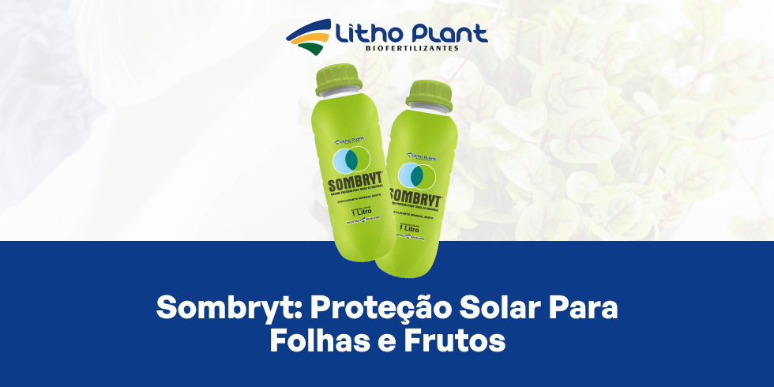

Sombryt: Proteção Solar Para Folhas e Frutos

Sombryt foi desenvolvido para proteger folhas e frutos da radiação solar excessiva, mantendo a integridade das plantas.A Litho Plant, indústria de biofertilizantes em Linhares – ES, está na vanguarda da inovação agrícola, oferecendo produtos que melhoram a produtividade e a saúde das plantas.
Em um cenário em que a proteção das culturas é vital para garantir colheitas de alta qualidade, a empresa se destaca por soluções eficientes e sustentáveis.
Entre esses produtos, o Sombryt se destaca como um protetor solar para plantas, projetado para oferecer proteção solar para folhas e frutos contra os efeitos nocivos da radiação.
O Sombryt ajuda a manter a integridade das plantas, permitindo que realizem a fotossíntese de maneira eficiente, mesmo sob intensa radiação solar.
Se você busca maneiras eficazes de proteger suas culturas e garantir colheitas de alta qualidade, este artigo mostra como o Sombryt pode transformar a produção agrícola, indo além da simples proteção solar.
O que é o Sombryt?
O Sombryt é um fertilizante especial desenvolvido para proteger plantas contra a radiação solar excessiva.
Aplicado de forma foliar, ele atua como protetor solar, protegendo folhas e frutos e permitindo que a fotossíntese ocorra normalmente, evitando danos causados pelo excesso de exposição ao sol.
Em ambientes agrícolas com alta radiação, o Sombryt surge como solução inovadora e eficaz para os desafios do produtor.
Composição e funcionamento do Sombryt
O Sombryt contém ingredientes ativos que formam uma barreira protetora nas folhas e frutos, refletindo e atenuando parte da radiação incidente.
Essa camada contribui para reduzir a intensidade da luz e da radiação UV que atinge diretamente os tecidos, ajudando a prevenir queimaduras e outros danos associados à exposição excessiva.
A aplicação foliar é simples e proporciona cobertura uniforme e duradoura, com formulação desenvolvida para boa aderência às superfícies das plantas.
Estudos com protetores solares vegetais indicam redução significativa de danos por radiação e melhora da saúde e produtividade das culturas quando a tecnologia é bem manejada.
Além da proteção, componentes do Sombryt podem auxiliar na retenção de água na superfície das folhas, contribuindo para menor estresse hídrico em períodos de maior calor.
Benefícios do Sombryt na lavoura
Os benefícios do Sombryt abrangem pontos-chave do desempenho da lavoura, desde proteção física até impactos diretos na produtividade.
Proteção solar para folhas e frutos
O Sombryt ajuda a prevenir queimaduras solares e danos causados pela radiação UV, comuns em regiões com alta exposição solar.
Queimaduras podem comprometer a aparência, a qualidade e a quantidade da colheita, além de enfraquecer as plantas e aumentar a vulnerabilidade a pragas e doenças.
Proteção de mudas
Plantas jovens são mais sensíveis ao estresse térmico e à radiação intensa. O Sombryt proporciona conforto térmico às mudas, ajudando no estabelecimento em condições de campo.
A proteção nas fases iniciais contribui para maior taxa de sobrevivência e crescimento mais uniforme do estande.
Fotossíntese mais eficiente
Em climas quentes, o excesso de radiação pode danificar pigmentos e reduzir a eficiência fotossintética.
Ao reduzir o estresse luminoso, o Sombryt contribui para que as plantas mantenham fotossíntese mais estável mesmo sob alta radiação, fator fundamental para crescimento e rendimento.
Diminuição do abortamento floral e quedas de frutos
Estresse térmico e radiação excessiva estão ligados a abortamento floral e queda de frutos em diversas culturas.
Com a proteção proporcionada pelo Sombryt, é possível reduzir essas perdas, favorecendo maior retenção de flores e frutos e colheitas mais abundantes.
Melhora na qualidade dos frutos
Frutos protegidos do excesso de radiação tendem a apresentar melhor coloração, menos manchas e menos defeitos superficiais.
Isso resulta em produtos de maior valor comercial e melhor aceitação em mercados mais exigentes.
Facilidade de aplicação no campo
O Sombryt é de fácil uso e pode ser integrado às rotinas de pulverização já adotadas na fazenda.
A aplicação foliar permite distribuição uniforme, sem necessidade de equipamentos especiais, otimizando tempo e recursos do produtor.
 Com Sombryt, frutos e folhas ficam menos sujeitos à queima solar, mantendo aparência e qualidade comercial.
Com Sombryt, frutos e folhas ficam menos sujeitos à queima solar, mantendo aparência e qualidade comercial.
Como aplicar o Sombryt na sua lavoura
A aplicação correta é fundamental para que o Sombryt entregue todo o potencial de proteção.
Modo de aplicação
O Sombryt deve ser aplicado de forma foliar, cobrindo de maneira uniforme as partes expostas das plantas, principalmente folhas e frutos.
Recomenda-se aplicar preferencialmente pela manhã ou no final da tarde, evitando as horas de maior insolação e reduzindo a evaporação da calda.
Em períodos de radiação mais intensa, pode ser necessário reaplicar o produto em intervalos definidos conforme recomendação técnica.
Dicas práticas de uso
É importante garantir boa cobertura em toda a planta, ajustar a frequência de aplicação aos períodos de maior risco e observar a compatibilidade com outros produtos utilizados no manejo.
O Sombryt pode ser integrado a programas que incluem biofertilizantes e outros insumos, compondo estratégias completas de proteção e nutrição.
 A aplicação foliar facilita a cobertura uniforme das plantas, garantindo proteção nas partes mais expostas ao sol.
A aplicação foliar facilita a cobertura uniforme das plantas, garantindo proteção nas partes mais expostas ao sol.
Produtos Litho Plant para proteção e nutrição
Além do Sombryt, a Litho Plant oferece uma gama de biofertilizantes que podem ser combinados para potencializar resultados no campo.
Linha de biofertilizantes Litho Plant
Entre os destaques está a Turfa Gel, biofertilizante à base de turfa que melhora a saúde do solo, aumenta a retenção de água e favorece o desenvolvimento radicular.
Combinados com o Sombryt, produtos da linha Litho Plant ajudam a unir proteção contra o estresse térmico e nutrição equilibrada, formando um pacote completo para diferentes culturas.
Consultoria e suporte técnico
A Litho Plant também oferece consultoria agronômica para auxiliar na adoção das melhores práticas de manejo e no posicionamento correto dos produtos na rotina da propriedade.
A equipe técnica está disponível para orientar sobre doses, épocas de aplicação e integração do Sombryt e dos biofertilizantes em programas de manejo mais eficientes e sustentáveis.
Conclusão
Proteger as plantas da radiação solar excessiva é essencial para garantir lavouras mais saudáveis, produtivas e com frutos de melhor qualidade.
O Sombryt, protetor solar desenvolvido pela Litho Plant, oferece proteção solar para folhas e frutos, reduzindo escaldadura e ajudando a manter a fotossíntese e o desempenho das culturas.
Se você procura soluções para proteger suas culturas e promover a saúde das plantas, entre em contato com a Litho Plant para conhecer o Sombryt e os demais produtos disponíveis.
Solicite um orçamento e descubra como as tecnologias Litho Plant podem transformar a sua produção agrícola, gerando benefícios duradouros para sua lavoura e para o meio ambiente.